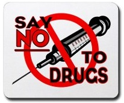
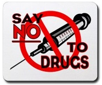
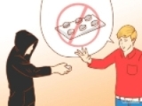
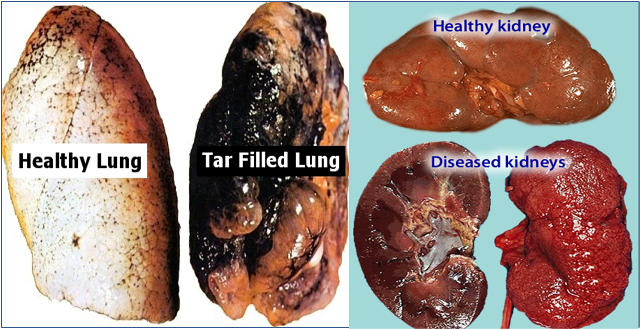

- Find healthy ways to cope with stress:
Many people begin using drugs as a way to deal with stress and tension.
The reality is, however, that drugs are only a temporary fix.
Finding coping methods such as exercise or meditation can eliminate the urge to try drugs.
- Seek therapy or counseling:
Drug users often are people who are attempting to self-medicate for their psychological issues.
Working through problems with a mental health professional is a much more effective and long-lasting way of treating a psychological or emotional problem.
- Maintain a lifestyle that makes you happy:
Low self-esteem and depression are major triggers for drug abuse.
Maintaining strong relationships and a healthy balance between physical and mental activity can help you.
- Be aware of your family’s history with substance abuse:
If you know that you have a higher chance of becoming addicted, take extra precautions to avoid drugs and alcohol.
It are much easier to avoid substances altogether than it is to recover from addiction.
No matter what your background or current situation is, it is possible to avoid slipping into the dangers of addiction.
Exercise:
Exercise releases endorphins, relieves stress, and promotes emotional well-being.
Try running in place, jumping rope, or walking around the block.
- Escaping:
Learn to avoid places, people, and situations where they might be tempted to use drugs.
Prepare yourself for occasions where strangers may offer drugs to you.
- Look for consequences:
Look at list of people who have been destroyed, even killed, by drugs.
For every rock star who looks cool taking drugs, there is one who is in rehab, or has died. We must take good decision.
- Tell an adult about it:
Make sure that you alert the appropriate person about the encounter .Give all details you can.
"Twinkle Twinkle little star,if you are a drug user you won't go far."